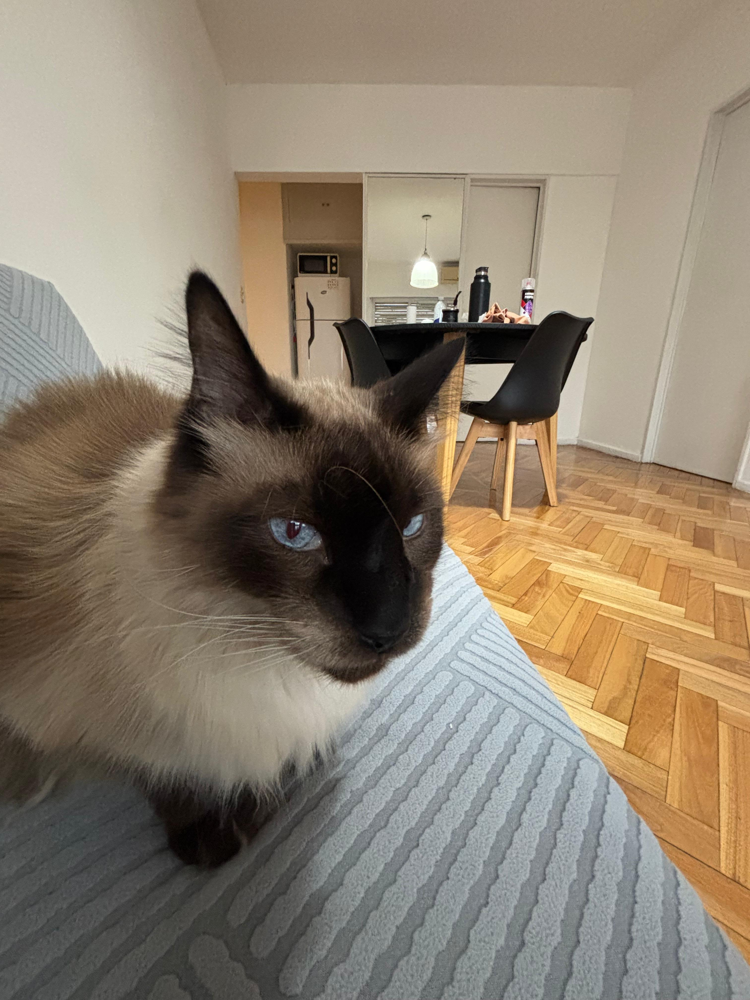
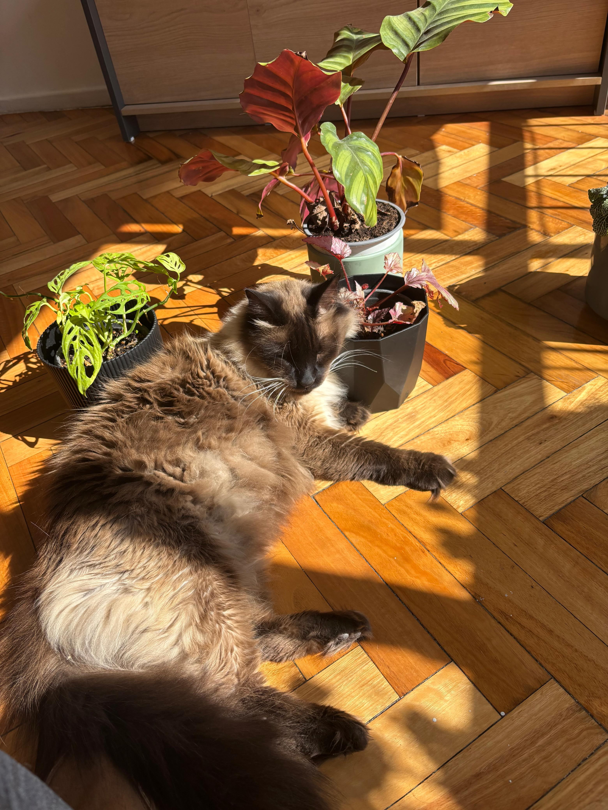

Kafka
A Kafka lo adopté hace 7 años. Creemos que es de raza, pero nunca pudimos identificar bien cuál: puede ser siamés, sagrado de birmania o ragdoll. Cuando me mudé, fue la única mascota que me llevé a vivir conmigo.
- Tipo: Gato.
- Edad: 7 años.
- Peso: 7 kilos.
- Comportamiento: Duerme todo el día y ronca bastante fuerte.


Costumbres
Pasa casi todo el día acostado durmiendo. Cuando duerme ronca mucho, pero cuando está despierto es de ronronear bastante. Odia el agua y bajo ningún concepto se deja bañar.
← Volver al inicio